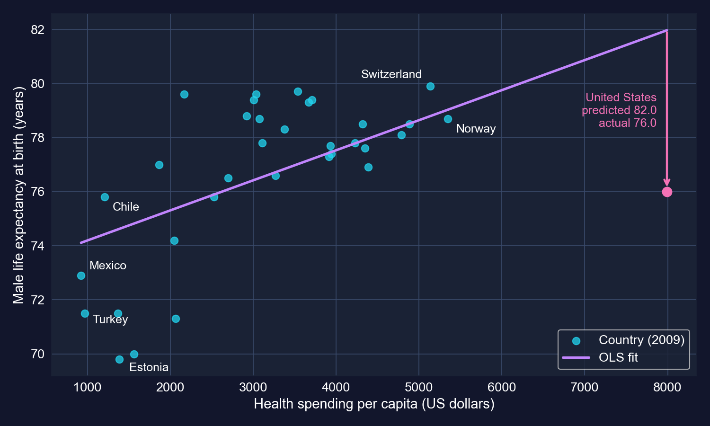
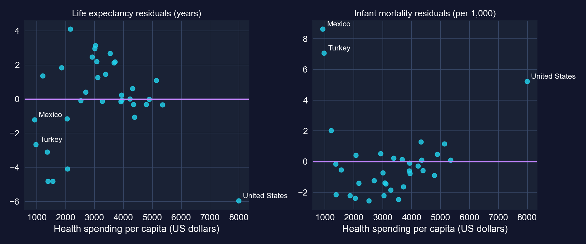
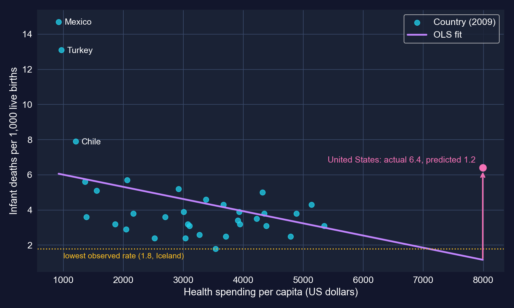
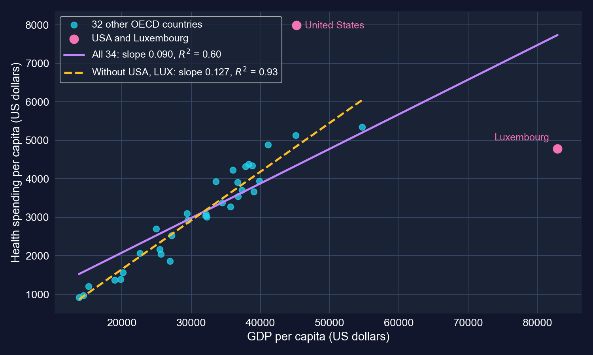
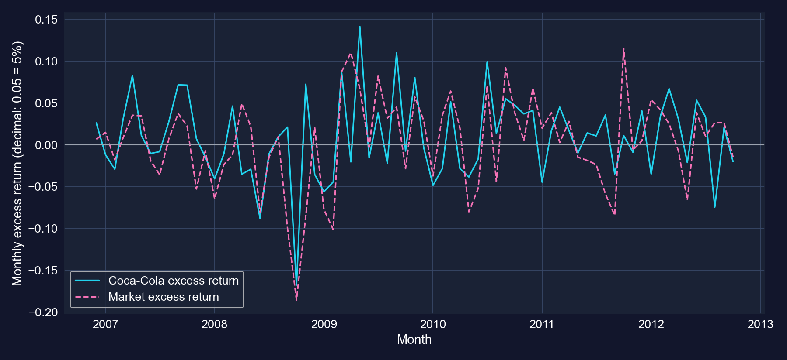
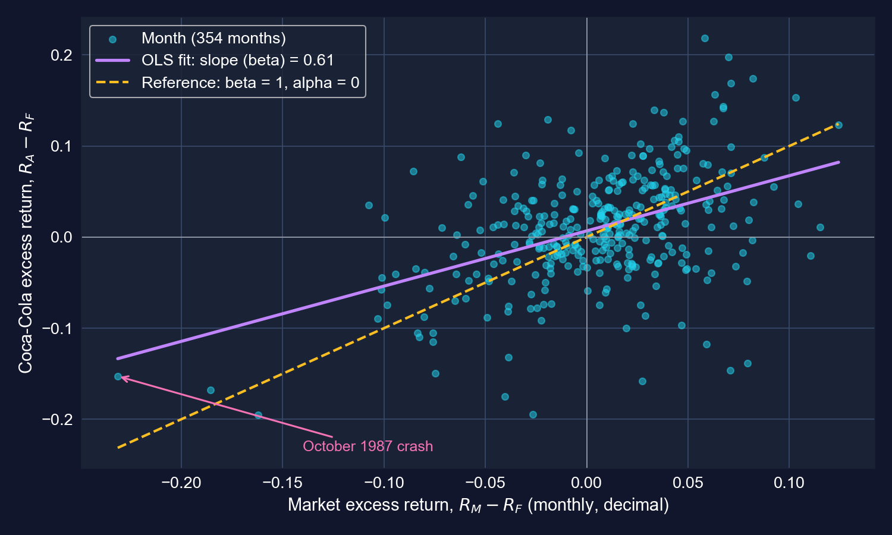
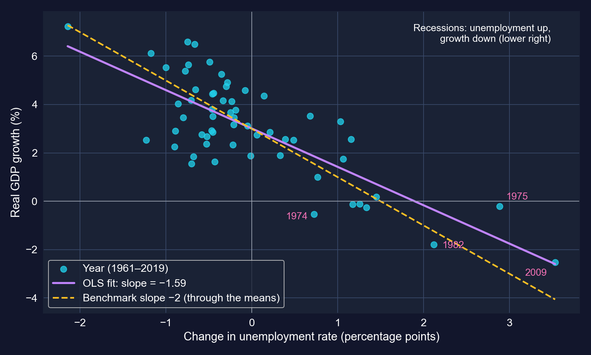
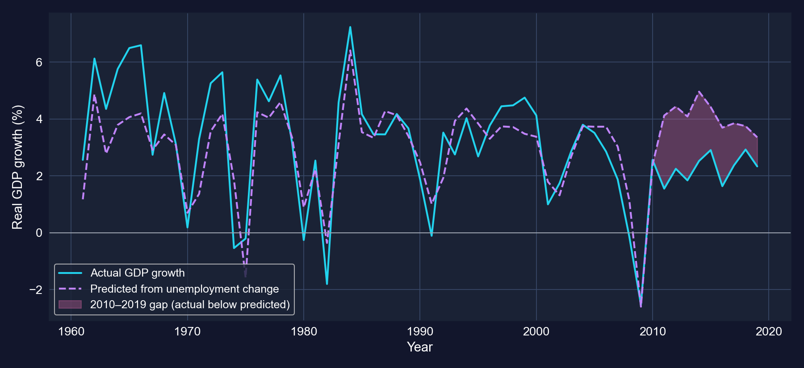

La misma línea responde preguntas enormemente distintas
Un economista de la salud, un gestor de carteras y un macroeconomista parecen trabajar en mundos separados. Y sin embargo, cada uno recurre al mismo instrumento:
\[y_i = \beta_1 + \beta_2\, x_i + u_i\]
La parte difícil no es correr la regresión. Es leer la pendiente con honestidad: en las unidades correctas, con los errores estándar correctos, frente a la hipótesis correcta, y con un ojo puesto en las pocas observaciones que pueden determinarla.
Un estimador, cuatro expedientes. En cada uno preguntamos qué significa la pendiente, qué tan seguros estamos y qué podría hacerla engañosa.
Cuatro expedientes — haz clic en cualquier caso para ir a él
IC del 95%: \(\hat\beta_2 \pm t_{0.025,\,n-2}\times \text{se}(\hat\beta_2)\)
\(\beta_2^* = 0\) es solo el valor por defecto: el \(-2\) de Okun y el \(\beta = 1\) del CAPM son hipótesis nulas más interesantes
Cada resultado de esta presentación es una de estas fórmulas aplicada a datos reales. La única pieza móvil es qué error estándar entra en el denominador.
Repaso del método: errores estándar clásicos frente a robustos
Esperamos \(\beta_2 > 0\) para la esperanza de vida y \(\beta_2 < 0\) para la mortalidad infantil. El gasto lo eligen los países, no se asigna, así que espera asociaciones.
Los datos: el gasto varía casi nueve veces en la OCDE
Variable
Media
Desv. est.
Mín
Máx
hlthpc (US$)
3,255.6
1,493.7
923 (México)
7,990 (EE. UU.)
lifeexp (años)
76.70
2.94
69.8 (Estonia)
79.9 (Suiza)
infmort (por 1,000)
4.45
2.72
1.8 (Islandia)
14.7 (México)
N = 34 · OCDE, 2009 · Tabla 8.1 del capítulo
EE. UU. gasta $2,642 más por persona que el país que le sigue, Noruega. Eso por sí solo lo convierte en candidato a observación influyente.
Código: cargar los datos y resumirlos
!pip install -q pyfixest # pyfixest is not preinstalled in Colabimport pandas as pd # tabular dataimport pyfixest as pf # OLS with R-style formulas and robust SEsurl ="https://raw.githubusercontent.com/quarcs-lab/data-open/master/AED/AED_HEALTH2009.DTA"data_health = pd.read_stata(url) # 34 OECD countries in 2009, one row eachtable81 = data_health[["hlthpc", "lifeexp", "infmort"]].describe().T # one row per variabletable81["range"] = table81["max"] - table81["min"] # max minus minprint(table81[["mean", "std", "min", "max", "range"]].round(2)) # Table 8.1
Ajustar dos veces no cuesta nada: vcov cambia los errores estándar, nunca la línea.
Salida: +1.11 años por $1,000, pero el EE robusto es 1.6× mayor
Variable
Coef.
EE (iid)
\(t\)
\(p\)
EE (HC1)
\(t\)
\(p\)
Intercept
73.084
1.024
71.36
< 0.001
1.565
46.70
< 0.001
hlthpc
0.001112
0.000287
3.88
< 0.001
0.000464
2.40
0.023
N = 34 · \(R^2 = 0.320\) · IC del 95% para la pendiente: [0.000528, 0.001696] (iid), [0.000167, 0.002056] (HC1)
Unidades: 0.001112 años por dólar = 1.11 años por $1,000 de gasto por persona
IC robusto del 95% por $1,000: de 0.17 a 2.06 años, positivo pero amplio
Intercepto 73.1: esperanza de vida predicha con gasto cero, muy por debajo del gasto más bajo observado ($923), así que no tiene sentido por sí solo
Significativo de cualquier forma (\(p\) = 0.023 con HC1), pero el intervalo robusto es 1.6× más amplio. El gasto en salud explica el 32% de la variación entre países.
Leyendo la pendiente: ¿la línea predice brechas reales?
Chile gasta $1,210 por persona; Noruega gasta $5,348, una brecha de $4,138
La pendiente predice una brecha de esperanza de vida de \(4.138 \times 1.11 \approx\)4.6 años
La brecha real es 78.7 − 75.8 = 2.9 años
La línea es una relación promedio entre 34 países; cualquier par individual puede estar lejos de ella
Una pendiente resume la nube, no cada par dentro de ella. Un error de predicción típico es de unos 2.4 años (el RECM en la salida).
EE. UU. vive 6 años menos de lo que predice su gasto

Esperanza de vida masculina frente al gasto en salud, con la línea de MCO. EE. UU. se ubica muy por debajo de la línea en el extremo derecho.
Con $7,990 la línea predice 82.0 años; EE. UU. registra 76.0. Su residuo de −6.0 años es el mayor de los 34 países.
Por qué el EE robusto es mayor: residuos grandes en gastos extremos

Residuos frente al gasto en salud. Los residuos más grandes están en los gastos más bajos (México, Turquía) y más altos (EE. UU.).
HC1 pondera cada residuo al cuadrado por \((x_i-\bar x)^2\). EE. UU. es a la vez el que más gasta de forma extrema y el país con peor ajuste, así que infla el EE robusto.
Código: mortalidad infantil sobre gasto en salud
# continues from the previous blockmodel_infmort = pf.feols("infmort ~ hlthpc", data=data_health) # classical SEsmodel_infmort_robust = pf.feols("infmort ~ hlthpc", data=data_health, vcov="HC1") # robust SEsmodel_infmort.summary() # slope, classical SE, t, pmodel_infmort_robust.summary() # same slope, HC1 SE, t, pslope_inf = model_infmort.coef()["hlthpc"] # infant deaths per 1,000 births per extra dollarprint(f"per $1,000: {slope_inf*1000:.2f}; from $2,000 to $4,000: {slope_inf*2000:.2f}")
Salida: el veredicto se voltea con errores estándar robustos
Variable
Coef.
EE (iid)
\(t\)
\(p\)
EE (HC1)
\(t\)
\(p\)
Intercept
6.702
1.064
6.30
< 0.001
1.877
3.57
0.001
hlthpc
−0.000693
0.000298
−2.33
0.027
0.000515
−1.35
0.188
N = 34 · \(R^2 = 0.145\) · IC del 95% para la pendiente: [−0.001299, −0.000086] (iid), [−0.001741, 0.000356] (HC1)
Unidades: −0.69 muertes infantiles por 1,000 nacimientos por cada $1,000 adicionales por persona
EE clásicos: significativo al 5% (\(t = -2.33\))
HC1: el EE es 1.7× mayor, \(t = -1.35\), \(p = 0.19\), y el IC incluye el cero
Misma pendiente, veredictos opuestos. Con EE robustos, los datos no pueden descartar una asociación de cero.
EE. UU. otra vez: 6.4 muertes infantiles donde la línea predice 1.2

Mortalidad infantil frente al gasto en salud. La predicción de la línea para EE. UU. cae por debajo de la tasa más baja observada en cualquier parte de la muestra.
La predicción para EE. UU. (1.2) es menor que la que cualquier país alcanza en realidad (Islandia, 1.8). Una línea recta extrapolada hasta $7,990 promete lo imposible.
Interpretando la pendiente de mortalidad infantil: magnitud vs evidencia
Magnitud económica (el ejemplo del capítulo): pasar de $2,000 a $4,000 por persona predice 1.39 muertes menos por 1,000 nacimientos, es decir, unas 139 muertes infantiles menos al año en un país con 100,000 nacimientos
Evidencia estadística: con EE robustos no podemos distinguir esa pendiente de cero (\(p = 0.19\))
Ajuste: el gasto explica solo el 14.5% de la variación; las altas tasas de México y Turquía dominan la nube
Económicamente grande si es cierto, estadísticamente débil en esta muestra. Reporta ambas, y no dejes que un número grande sustituya a la evidencia.
Verificación de robustez: las mismas regresiones sin EE. UU.
Resultado
Muestra
Pendiente por $1,000
HC1 \(t\)
\(p\)
\(R^2\)
Esperanza de vida
los 34
1.11
2.40
0.023
0.320
Esperanza de vida
sin EE. UU. (33)
1.69
5.60
< 0.001
0.507
Mortalidad infantil
los 34
−0.69
−1.35
0.188
0.145
Mortalidad infantil
sin EE. UU. (33)
−1.20
−2.46
0.019
0.302
No está en el capítulo: el mismo modelo pf.feols con vcov="HC1" sobre 33 países, reflejando la propia verificación de valores atípicos del capítulo en 8.2.
Un país aplana ambas pendientes y oculta la asociación de la mortalidad infantil. Quitarlo no es automáticamente correcto, pero debes saber que importa.
Código: la predicción de EE. UU. y la verificación de quitar uno
# continues from the previous blockresid = data_health["lifeexp"] - model_lifeexp.predict() # actual minus fitted, by countryprint(data_health.assign(resid=resid) .nsmallest(3, "resid")[["code", "lifeexp", "resid"]]) # USA has the largest shortfallus = data_health[data_health["code"] =="USA"] # the United States rowprint(model_lifeexp.predict(newdata=us), # life expectancy at $7,990 model_infmort.predict(newdata=us)) # infant mortality at $7,990no_us = data_health[data_health["code"] !="USA"] # not in the chapter: 33 countriesfor y in ["lifeexp", "infmort"]: # same model for both outcomes fit = pf.feols(f"{y} ~ hlthpc", data=no_us, vcov="HC1") # robust SEs, as beforeprint(y, round(fit.coef()["hlthpc"] *1000, 2), # slope per $1,000round(fit.tstat()["hlthpc"], 2), round(fit._r2, 3)) # robust t and R²
Ambas variables están en dólares por persona, así que la pendiente es una propensión marginal: cuántos centavos de gasto en salud acompañan a un dólar más de PIB.
Código: gasto en salud sobre PIB, EE clásicos y robustos
!pip install -q pyfixest # pyfixest is not preinstalled in Colabimport pandas as pd # tabular dataimport pyfixest as pf # OLS with robust SEsurl ="https://raw.githubusercontent.com/quarcs-lab/data-open/master/AED/AED_HEALTH2009.DTA"data_health = pd.read_stata(url) # 34 OECD countries in 2009print(data_health[["gdppc", "hlthpc"]].describe().T.round(1)) # Table 8.2model_hlthpc = pf.feols("hlthpc ~ gdppc", data=data_health) # classical SEsmodel_hlthpc_robust = pf.feols("hlthpc ~ gdppc", data=data_health, vcov="HC1") # robust SEsmodel_hlthpc_robust.summary() # same slope, HC1 inferenceslope = model_hlthpc.coef()["gdppc"] # dollars of health spending per dollar of GDPx_bar, y_bar = data_health["gdppc"].mean(), data_health["hlthpc"].mean() # sample meansprint("elasticity at the means:", slope * x_bar / y_bar) # slope × x̄ / ȳ
En las medias muestrales, un PIB per cápita 1% mayor acompaña a un gasto en salud aproximadamente 0.91% mayor
Bien normal significa \(\eta > 0\): el gasto aumenta con el ingreso. Cualquier pendiente positiva ya lo dice
Necesidad (\(0 < \eta < 1\)) vs lujo (\(\eta > 1\)): el gasto aumenta menos, o más, que proporcionalmente
En un modelo lineal la elasticidad cambia a lo largo de la línea; en las medias es un punto de evaluación
\(\eta \approx 0.91\) dice que el gasto en salud aumenta aproximadamente en proporción al ingreso en esta muestra, cerca del límite entre necesidad y lujo.
Código: quitar a EE. UU. y Luxemburgo, luego cada uno por separado
# continues from the previous blockdata_health_subset = data_health[(data_health["code"] !="LUX") & (data_health["code"] !="USA")] # 32 countriesmodel_hlthpc_subset = pf.feols("hlthpc ~ gdppc", data=data_health_subset) # classical SEsmodel_hlthpc_subset_robust = pf.feols("hlthpc ~ gdppc", data=data_health_subset, vcov="HC1") # robust SEsmodel_hlthpc_subset_robust.summary() # slope, HC1 SE, R²sub = data_health_subset # shorter nameb_sub = model_hlthpc_subset.coef()["gdppc"] # subset slopeprint("elasticity:", b_sub * sub["gdppc"].mean() / sub["hlthpc"].mean()) # at subset meansfor code in ["USA", "LUX"]: # not in chapter: drop one fit = pf.feols("hlthpc ~ gdppc", data=data_health[data_health["code"] != code], vcov="HC1")print("without", code, round(fit.coef()["gdppc"], 4),round(fit.tstat()["gdppc"], 2), round(fit._r2, 3)) # slope, robust t, R²
Salida: sin dos países la pendiente sube 41% y el \(R^2\) llega a 0.93
Variable
Coef.
EE (iid)
\(t\)
\(p\)
EE (HC1)
\(t\)
\(p\)
Intercept
−883.3
208.9
−4.23
< 0.001
213.4
−4.14
< 0.001
gdppc
0.1267
0.0064
19.69
< 0.001
0.0076
16.65
< 0.001
N = 32 (EE. UU. y Luxemburgo excluidos) · \(R^2 = 0.928\) · IC del 95% para la pendiente: [0.1136, 0.1399] (iid), [0.1112, 0.1423] (HC1)
Pendiente: $90 → $127 por $1,000 de PIB (+41%)
\(R^2\): 0.604 → 0.928; el EE robusto es ahora solo 1.2× el EE clásico
Elasticidad en las medias del subconjunto: \(0.1267 \times 31{,}117 / 3{,}060 \approx\)1.29
Quita dos países y la pendiente, el ajuste, la brecha del EE y la historia económica (necesidad → lujo) cambian todas.
Dos líneas, dos historias

Gasto en salud frente al PIB per cápita. Morado: MCO sobre los 34 países. Amarillo discontinuo: MCO sobre los 32 países sin EE. UU. y Luxemburgo.
EE. UU. se ubica muy por encima de cualquier línea; Luxemburgo se ubica muy a la derecha y por debajo. Juntos inclinan la línea de la muestra completa y aflojan el ajuste.
Anatomía de la influencia: quita cada país por su cuenta
Muestra
N
Pendiente
HC1 \(t\)
\(R^2\)
Qué cambia
Todos los países
34
0.0899
3.08
0.604
—
Sin EE. UU.
33
0.0814
3.37
0.701
el ajuste mejora, la pendiente apenas se mueve
Sin Luxemburgo
33
0.1413
8.33
0.826
la pendiente salta un 57%
Sin ambos
32
0.1267
16.65
0.928
ambos efectos
No está en el capítulo: la misma regresión HC1 sobre cada submuestra.
EE. UU. es un valor atípico en \(y\): un residuo enorme que sobre todo agrega ruido. Luxemburgo es un punto de alto apalancamiento en \(x\) que arrastra la pendiente hacia abajo.
Leyendo la verificación de robustez correctamente
\(R^2 = 0.60\)no es un “ajuste débil” para un corte transversal de 34 países; el PIB explica la mayor parte de la variación
Quitar los dos puntos con peor ajuste mecánicamente sube el \(R^2\): eliminaste los residuos más grandes
La línea del subconjunto describe “los otros 32 países”, no una relación “verdadera” que los valores atípicos estuvieran ocultando
Razones legítimas para excluir: un error de datos, o una unidad de una población distinta (un pequeño centro financiero cuyo PIB cuenta la producción de trabajadores transfronterizos)
El reporte honesto muestra ambos ajustes y dice por qué difieren
Las verificaciones de valores atípicos sirven para entender una pendiente, no para elegir la muestra que da el \(R^2\) más bonito.
Advertencias para 8.2
Asociación, no causalidad: el PIB y el gasto en salud ambos reflejan instituciones, demografía y precios
Un año (2009): un año de recesión; el PIB cayó más que los presupuestos de salud en muchos países
Forma funcional: una línea recta en dólares impone una elasticidad variable; los logaritmos (Capítulo 9) son la alternativa estándar
N pequeño: con 34 observaciones, dos países mueven cada estadística, como acabamos de ver
El gasto en salud aumenta con el ingreso, a grosso modo 9–13 centavos por dólar dependiendo de dos países. Todo lo más fino que eso necesita más datos o más estructura.
Caso 8.3 · ¿Qué tan riesgosa es la acción de Coca-Cola?
Serie de tiempo financiera · beta del CAPM · probar \(\beta = 1\) y \(\alpha = 0\)
La teoría: solo el riesgo de mercado gana una prima
\[\underbrace{R_A - R_F}_{\text{rendimiento en exceso del activo}} = \alpha_A + \beta_A\,\underbrace{(R_M - R_F)}_{\text{rendimiento en exceso del mercado}} + u\]
\(\beta_A\) = riesgo sistemático: cuánto se mueve el activo con el mercado. El mercado mismo tiene \(\beta = 1\)
\(\beta > 1\): agresivo, amplifica los vaivenes del mercado; \(\beta < 1\): defensivo, los amortigua
\(\alpha_A\) = rendimiento más allá de lo que justifica \(\beta\). El CAPM predice \(\alpha = 0\)
\(u\) = choques específicos de la empresa (idiosincráticos), que la diversificación elimina
El CAPM nos entrega dos hipótesis más interesantes que “la pendiente es cero”: \(\beta = 1\) y \(\alpha = 0\).
Los datos: 354 meses de rendimientos en exceso, mayo 1983 – octubre 2012
Variable (mensual)
Significado
Media
Desv. est.
rm_rf
rendimiento en exceso del mercado, \(R_M - R_F\)
0.555%
4.556%
rko_rf
rendimiento en exceso de Coca-Cola, \(R_A - R_F\)
1.018%
6.160%
rf
tasa de letras del Tesoro a un mes
0.350%
0.221%
N = 354 · los rendimientos se almacenan como decimales (0.05 = 5%) · el archivo también contiene Target (rtgt_rf) y Walmart (rwmt_rf)
Coca-Cola es más volátil que el mercado (6.2% vs 4.6% al mes), y sin embargo hallaremos que es menos riesgosa en el sentido del CAPM.
Coca-Cola y el mercado se mueven juntos, pero no uno a uno

Rendimientos mensuales en exceso, diciembre 2006 – octubre 2012 (el último 20% de la muestra, como en la Figura 8.3 Panel A del capítulo).
Las dos líneas comparten los grandes vaivenes (2008–09), pero Coca-Cola también se mueve por sus propias noticias. La regresión mide cuánto de cada cosa.
Código: estimar el CAPM para Coca-Cola
!pip install -q pyfixest # pyfixest is not preinstalled in Colabimport pandas as pd # tabular dataimport pyfixest as pf # OLS with robust SEsfrom scipy import stats # t distribution for custom testsurl ="https://raw.githubusercontent.com/quarcs-lab/data-open/master/AED/AED_CAPM.DTA"data_capm = pd.read_stata(url) # 354 monthly returns, May 1983 – Oct 2012print(data_capm[["rm_rf", "rko_rf", "rf"]].describe().T.round(4)) # Table 8.3 (excerpt)model_capm = pf.feols("rko_rf ~ rm_rf", data=data_capm) # classical SEsmodel_capm_robust = pf.feols("rko_rf ~ rm_rf", data=data_capm, vcov="HC1") # robust SEsmodel_capm_robust.summary() # alpha (Intercept), beta (rm_rf), R²
Salida: \(\hat\beta = 0.61\), y un \(\hat\alpha\) positivo
Variable
Coef.
EE (iid)
\(t\)
\(p\)
EE (HC1)
\(t\)
\(p\)
Intercept (\(\alpha\))
0.00681
0.00295
2.31
0.022
0.00290
2.35
0.019
rm_rf (\(\beta\))
0.6063
0.0644
9.41
< 0.001
0.0770
7.88
< 0.001
N = 354 · \(R^2 = 0.201\) · IC del 95% para \(\beta\): [0.4796, 0.7330] (iid), [0.4549, 0.7577] (HC1)
Beta 0.61: un mes en que el rendimiento en exceso del mercado es 1 punto porcentual mayor acompaña a un rendimiento en exceso de Coca-Cola unos 0.61 puntos mayor
Alfa 0.0068: alrededor de 0.68% al mes que la exposición al mercado no explica
El EE robusto para \(\beta\) es 1.2× el EE clásico; ambos rechazan \(\beta = 0\) de manera abrumadora
Coca-Cola se mueve junto con el mercado a unos 61 centavos por cada dólar del mercado. Ambos IC se ubican por completo por debajo de 1.
Leyendo beta: tres formas equivalentes
Escenario: rendimiento en exceso del mercado +10% → rendimiento en exceso de Coca-Cola predicho \(0.0068 + 0.606 \times 0.10 \approx\)+6.7%; mercado −10% → −5.4%
División del riesgo:\(R^2 = 0.201\), así que el mercado da cuenta del 20% de la varianza del rendimiento en exceso de Coca-Cola; el 80% es idiosincrático
Coca-Cola es más volátil que el mercado, pero la mayor parte de esa volatilidad es propia. La parte que se mueve con el mercado es solo un 61% tan grande como la del mercado.
Código: probar \(\beta = 1\) y anualizar alfa
# continues from the previous blockb = model_capm_robust.coef()["rm_rf"] # estimated betase = model_capm_robust.se()["rm_rf"] # robust standard error of betat_beta1 = (b -1) / se # H0: beta = 1 (as risky as the market)df = model_capm._N -2# degrees of freedom, n − 2print("t =", t_beta1, " p =", 2* stats.t.sf(abs(t_beta1), df)) # two-sided p-valuealpha = model_capm.coef()["Intercept"] # monthly alpha, in decimalsprint("alpha x 12 =", 12* alpha) # simple annualization (the chapter's 8.2%)print("compounded =", (1+ alpha) **12-1) # compounding twelve monthly returns
Los datos dicen claramente que Coca-Cola es una acción defensiva. También dicen que ganó más de lo que su beta justificaba, lo que el CAPM dice que no debería ocurrir.
El 80% del riesgo mes a mes de Coca-Cola es propio

Rendimiento en exceso de Coca-Cola frente al del mercado, 354 meses. Morado: línea de MCO (β = 0.61). Amarillo discontinuo: cómo se verían β = 1 y α = 0.
La línea ajustada es más plana que la referencia β = 1 y cruza el cero ligeramente por encima del origen. La amplia dispersión vertical es el riesgo idiosincrático, cerca del 80% de la varianza.
¿Por qué es positiva alfa? Tres lecturas
El modelo está incompleto: faltan otros factores de riesgo con precio (tamaño, valor, momentum), así que “alfa” es la compensación por riesgos que el CAPM ignora
Desempeño genuinamente superior: Coca-Cola superó su valor de referencia ajustado por riesgo entre 1983 y 2012
Selección a posteriori: Coca-Cola es famosa porque le fue bien. Estudiar a un ganador conocido durante su periodo ganador garantiza un alfa positivo
Un alfa significativo en una sola acción escogida a mano es evidencia débil contra el CAPM. Las pruebas del CAPM usan muchos activos a la vez.
Código: la misma regresión para otras acciones y otros periodos
# continues from the previous block — not in the chapter: simple comparisons, same estimatorfor y in ["rko_rf", "rwmt_rf", "rtgt_rf"]: # Coca-Cola, Walmart, Target fit = pf.feols(f"{y} ~ rm_rf", data=data_capm, vcov="HC1") # CAPM for each stockprint(y, fit.coef().round(4).to_dict(), round(fit._r2, 3)) # alpha, beta, R²half =len(data_capm) //2# split the 354 months in twofor name, part in [("1983–1998", data_capm.iloc[:half]), ("1998–2012", data_capm.iloc[half:])]: fit = pf.feols("rko_rf ~ rm_rf", data=part, vcov="HC1") # Coca-Cola, each halfprint(name, fit.coef().round(4).to_dict(), fit.pvalue().round(3).to_dict())
Salida: los betas difieren entre acciones y derivan con el tiempo
Regresión (EE HC1)
Meses
\(\hat\alpha\)
\(p(\alpha)\)
\(\hat\beta\)
EE(\(\beta\))
\(R^2\)
Coca-Cola, muestra completa
354
0.0068
0.019
0.606
0.077
0.201
Walmart, muestra completa
354
0.0080
0.017
0.748
0.091
0.236
Target, muestra completa
354
0.0044
0.240
1.067
0.116
0.333
Coca-Cola, 1983–1998
177
0.0112
0.002
0.844
0.095
0.344
Coca-Cola, 1998–2012
177
0.0011
0.800
0.437
0.113
0.117
No está en el capítulo: la misma regresión CAPM HC1 sobre otras columnas de AED_CAPM.DTA y sobre dos mitades de la muestra (mayo 1983 – enero 1998, febrero 1998 – octubre 2012).
Target es casi tan riesgosa como el mercado; las dos de consumo básico son defensivas. El beta de Coca-Cola se redujo a la mitad con el tiempo, y su alfa vino de la primera mitad.
Advertencias para 8.3
Errores estándar: para rendimientos mensuales HC1 es razonable: los residuos muestran casi nada de autocorrelación (correlación de rezago 1 de −0.04)
El CAPM en sí no supone que los rendimientos sean independientes en el tiempo; los errores estándar clásicos de MCO sí. Eso es una afirmación sobre la inferencia, no sobre el modelo
Beta variable en el tiempo: un solo beta para 30 años promedia periodos muy distintos (0.84 vs 0.44)
Colas gruesas: los meses de crac como octubre de 1987 cargan mucho peso en un ajuste por mínimos cuadrados
Proxy del mercado: un índice ponderado por valor sustituye a “la cartera de mercado” a la que se refiere la teoría
\(\hat\beta = 0.61\) es una sensibilidad promedio bien medida a lo largo de 1983–2012. Úsala para describir el pasado, no como una constante de la naturaleza.
Caso 8.4 · ¿Se cumple la Ley de Okun para EE. UU.?
Serie de tiempo macro · probar \(\beta_2 = -2\) · quiebres estructurales
La pregunta: ¿cuánto crecimiento perdemos cuando sube el desempleo?
N = 59 · \(R^2 = 0.592\) · IC del 95% para la pendiente: [−1.939, −1.239] (iid), [−1.915, −1.263] (HC1)
Pendiente: un año en que el desempleo sube 1 punto porcentual tiene un crecimiento unos 1.59 puntos porcentuales menor
Intercepto 3.0: crecimiento predicho en un año en que el desempleo no cambia, aproximadamente el crecimiento tendencial de la economía
El EE HC1 es ligeramente menor que el EE clásico (0.93×): lo robusto no siempre es mayor
Una asociación fuerte y estrecha: los cambios del desempleo por sí solos dan cuenta del 59% de la variación año a año del crecimiento.
Leyendo los coeficientes en puntos porcentuales
Desempleo 5% → 6% (+1 pp): el crecimiento predicho cae de 3.0% a \(3.008 - 1.589 \approx\)1.4%
Punto de equilibrio: se predice que el desempleo se mantiene estable solo cuando el crecimiento es de alrededor de 3.0%
Crecimiento cero acompaña a un aumento predicho del desempleo de \(3.008 / 1.589 \approx\)1.9 pp
Porcentaje vs punto porcentual: el crecimiento es un cambio porcentual; el regresor es un cambio en una tasa, así que su unidad es el punto porcentual
La Ley de Okun es una afirmación sobre puntos porcentuales. “El desempleo sube 1%” significaría de 5% a 5.05%, una afirmación completamente distinta.
Código: probar el valor de referencia −2 e inspeccionar los residuos
# continues from the previous blockfrom scipy import stats # t distributionb = model_okun.coef()["uratechange"] # slope estimatese = model_okun.se()["uratechange"] # classical SE, as in the chaptert_okun = (b - (-2.0)) / se # H0: beta2 = -2print("t =", t_okun, " p =", 2* stats.t.sf(abs(t_okun), model_okun._N -2))pred = model_okun.predict() # fitted growth, year by yearresid = data_gdp["rgdpgrowth"] - pred # actual minus predictedlate = (data_gdp["year"] >=2010).values # the 2010sprint("2010s below prediction:", (resid[late] <0).sum(), "of", late.sum())print("mean actual vs predicted:", data_gdp["rgdpgrowth"][late].mean(), pred[late].mean())
Salida: −2 se rechaza al 5%, aunque la estimación no está lejos de él
Prueba de \(H_0: \beta_2 = -2\)
Estimación
EE
\(t\)
\(p\)
IC del 95%
EE clásicos
−1.589
0.175
2.35
0.022
[−1.939, −1.239]
EE HC1
−1.589
0.163
2.52
0.014
[−1.915, −1.263]
Ambos IC excluyen −2, pero por poco: −2 está 0.06–0.09 por debajo de sus extremos inferiores
Al nivel del 1% no rechazaríamos −2 (\(p > 0.01\) en ambos casos)
Económicamente, −1.59 vs −2 es una diferencia de 0.4 puntos de crecimiento por punto de desempleo
Estadísticamente distinto de −2 al 5%, económicamente cercano. La relación en EE. UU. en 1961–2019 es algo más débil que la regla empírica.
Cada año de crecimiento negativo tuvo desempleo en aumento

Crecimiento del PIB frente al cambio en el desempleo, un punto por año. Morado: línea de MCO (−1.59). Amarillo discontinuo: una línea con pendiente −2 trazada a través de las medias muestrales.
Las recesiones se ubican en la esquina inferior derecha: desempleo arriba, crecimiento abajo. Los 7 años con crecimiento negativo (1974, 1975, 1980, 1982, 1991, 2008, 2009) tuvieron el desempleo en aumento.
Real frente a predicho: la línea funciona hasta los años 2010

Crecimiento real del PIB real y el crecimiento predicho a partir de los cambios del desempleo, 1961–2019. Sombreado: la brecha en 2010–2019.
De 2010 a 2019 el crecimiento real cayó por debajo de la predicción en 9 de 10 años, por 1.6 puntos en promedio (2.3% real vs 3.9% predicho).
¿Fue “excelente” el ajuste antes de 2008?
Periodo
Años
Raíz del error cuadrático medio
Residuo medio
1961–2007
47
1.16
+0.37
2008–2019
12
1.70
—
2010–2019
10
—
−1.62
Calculado a partir del modelo ajustado del capítulo; sin reestimación.
Antes de 2008 el error típico era aún de alrededor de 1.2 puntos de crecimiento, p. ej. 1974: −0.5% real vs +1.9% predicho
Después de 2008 los errores son mayores y de un solo signo, la firma de un desplazamiento en la relación
La relación era buena, no excelente, antes de 2008, y se rompió de forma sistemática después. Una sola línea para 59 años oculta eso.
Advertencias para 8.4: las series de tiempo necesitan inferencia de series de tiempo
Autocorrelación: la correlación de rezago 1 de los residuos es 0.47; los años buenos y malos vienen en rachas
HC1 corrige la heterocedasticidad pero no la autocorrelación; la corrección de libro de texto son los EE HAC (Newey–West), usados en los Capítulos 13 y 17
Quiebre estructural: una sola pendiente para 1961–2019 promedia al menos dos regímenes
No causal: tanto el crecimiento como el desempleo responden a los mismos choques de demanda y oferta; la Ley de Okun es una regularidad, no una palanca
Con errores autocorrelacionados, tanto los EE clásicos como los HC1 probablemente son demasiado pequeños, así que el rechazo de −2 al 5% es menos seguro de lo que parece.
Leerlo bien
Acto III · La resolución
Cuatro casos, lado a lado
Caso
Pendiente, en sus unidades
\(R^2\)
Razón de EE, HC1 / clásico
¿HC1 cambia el veredicto?
Amenaza principal
8.1 esperanza de vida
+1.11 años por $1,000
0.32
1.62
no (\(p\) 0.023)
EE. UU.; confusión por ingreso
8.1 mortalidad infantil
−0.69 muertes por 1,000 por $1,000
0.14
1.73
sí: \(p\) 0.027 → 0.188
EE. UU., México, Turquía
8.2 gasto en salud
+$90 por $1,000 de PIB
0.60
2.27
no (\(p\) 0.004)
EE. UU., Luxemburgo
8.3 CAPM
\(\beta = 0.61\) (sin unidades)
0.20
1.19
no
beta variable en el tiempo
8.4 Okun
−1.59 pp por pp
0.59
0.93
no
autocorrelación, quiebre
Los EE robustos importan más en cortes transversales pequeños con países de alto apalancamiento, y menos en la serie de tiempo larga.
Probar la hipótesis que importa, no solo \(\beta = 0\)
Caso
Hipótesis nula
Por qué importa
\(t\) robusto
Veredicto al 5%
8.1–8.2
\(\beta_2 = 0\)
¿hay alguna asociación?
2.40, −1.35, 3.08
rechazar, no rechazar, rechazar
8.3
\(\beta = 1\)
¿la acción es tan riesgosa como el mercado?
−5.11
rechazar: defensiva
8.3
\(\alpha = 0\)
¿el CAPM pone precio a esta acción?
2.35
rechazar (pero ver selección)
8.4
\(\beta_2 = -2\)
¿se cumple la regla empírica?
2.52
rechazar, por poco
La teoría provee la hipótesis nula interesante. El estadístico \(t\) es la misma fórmula con un número distinto restado.
Un país, dos estudios de caso: qué le hace EE. UU. a las pendientes
Regresión
Todos los países
Sin EE. UU.
Cambio
Esperanza de vida sobre gasto, por $1,000
1.11
1.69
pendiente +52%, \(R^2\) 0.32 → 0.51
Mortalidad infantil sobre gasto, por $1,000
−0.69
−1.20
se vuelve significativa con HC1 (\(p\) 0.019)
Gasto en salud sobre PIB, por $1,000
$89.9
$81.4
\(R^2\) 0.60 → 0.70
EE. UU. es el que más gasta y obtiene menos de lo que predice la línea. Si pertenece a la muestra es una pregunta sobre la población que quieres describir.
El error tentador — y la corrección
Objeción. “EE. UU. y Luxemburgo son valores atípicos. Quítalos y aparece la relación verdadera: \(R^2 = 0.93\).”
Respuesta. Eliminar los dos residuos más grandes sube el \(R^2\) por construcción. La línea de 32 países describe a los otros 32 países; no es más verdadera, responde una pregunta más estrecha. EE. UU. es un sistema de salud real, y su distancia de la línea es el hecho más relevante para las políticas en el conjunto de datos.
Usa las verificaciones de valores atípicos para aprender qué observaciones determinan un resultado y por qué, luego reporta cada versión que examinaste.
Cinco preguntas que hacerle a cualquier pendiente bivariada
Unidades: ¿qué significa una unidad de \(x\) y de \(y\), y qué tan grande es la pendiente en una unidad significativa?
Incertidumbre: ¿clásicos o robustos? ¿Cambia el veredicto? Para series de tiempo, ¿se necesita HAC?
Influencia: ¿qué observaciones están lejos de \(\bar x\) o lejos de la línea, y qué pasa sin ellas?
Hipótesis: ¿es \(\beta = 0\) la hipótesis nula interesante, o la teoría provee una mejor, como \(\beta = 1\) o \(\beta = -2\)?
Interpretación: ¿es esto una asociación, o algo en el diseño justifica una lectura causal?
Cada caso de este capítulo falló al menos una pregunta en la primera pasada. Hacer las cinco es el oficio.
Qué llevarse
Un solo estimador, pf.feols, ajusta datos de corte transversal, financieros y macro por igual
Agrega vcov="HC1" para cortes transversales; para series de tiempo, mira adelante a los errores estándar HAC
Traduce cada pendiente a unidades significativas antes de juzgar su tamaño
Encuentra las observaciones influyentes, reajusta sin ellas, y reporta ambos
Prueba la hipótesis que la teoría te da, y mantén separadas la significancia económica y la estadística
Siguiente: el Capítulo 9 pone las variables en logaritmos, así que las pendientes se vuelven elasticidades y efectos porcentuales directamente.
Ajusta la línea en cualquier dominio — luego lee la pendiente en sus unidades, con errores estándar honestos y un ojo puesto en la influencia.